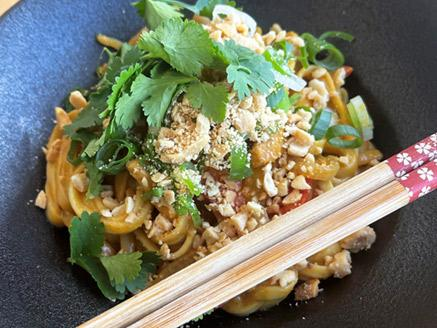

Vegan Satay Noodles

Description
This vibrant vegan satay noodles dish features crispy tofu and noodles tossed in a rich peanut sauce made with garlic, ginger, and lime. Quick, delicious, and packed with flavor!
Ingredients
- 200g firm tofu, sliced
- 100g noodles (your choice)
- 3 tbsp peanut butter
- 2 tbsp soy sauce
- 100g udon noodles
- 1 tbsp lime juice
- 1 clove garlic, minced
- 1 tsp ginger, minced
- chopped peanuts and cilantro for garnish
Steps
- Cook Noodles: Boil noodles according to package instructions. Drain and set aside.
- Cook Tofu: Heat oil in a pan. Add tofu and cook until golden and crispy.
- Make Sauce:In a bowl, mix peanut butter, soy sauce, lime juice, garlic, and ginger until smooth.
- combine: Add noodles and sauce to the pan with tofu. Toss until well coated and heated through.
- Serve:TGarnish with chopped peanuts and cilantro if desired. Enjoy!